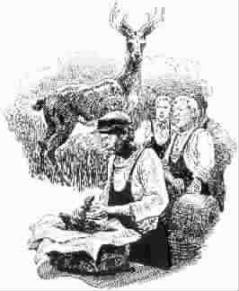

将心比心
○李 群编译
比尔·安德鲁是个笨拙的傻大个儿，一身衣服总是窝窝囊囊地不合身，几个捣蛋的工人总喜欢捉弄他。有个家伙发现他的衬衣袖子破了个口子，便故意把它扯大了一些。这人扯一下，那人扯一下，很快一块布条从袖子上垂了下来。比尔毫无觉察地照常工作，当他从传送带旁走过时，破布条被卷进机器里，眨眼间他的胳膊危在旦夕。好在警报响起，电闸及时拉下，一场事故避免了。工长集合全体人员讲了一个故事：
我年轻时在一家小工厂工作，在那里我认识了迈克。迈克身高体壮，脑筋也很灵活，他经常搞些恶作剧。彼得是迈克的马仔，总是跟着迈克跑前跑后。另外还有一个工友名叫杰克，他比我们年纪稍大，是个木讷的老实人。他有些孤僻，从不跟我们一起吃午饭，总是一个人安静地坐在树下，似乎对一切都毫无兴趣。很自然，杰克成了恶作剧的理想对象，但是好脾气的他从不发火。
有一年秋天，工作很清闲，迈克请了几天假外出打猎。当然，彼得也跟他去了。他们说好，如果有了收获一定分给我们每个人。所以得知他俩打到了一只很大的鹿，我们都非常兴奋。彼得什么秘密都守不住，很快人人都知道了，他俩准备跟杰克开个大玩笑。迈克把鹿肉分好，给我们每人一份。他把耳朵、尾巴和蹄子都留给了杰克。午休时迈克把礼物分发给大家，大家纷纷向他致谢。最大的一包留到了最后，那是为杰克准备的。迈克把礼包推到他面前，我们屏住呼吸等待着。
杰克双手紧紧抓住礼包，慢慢站了起来，咧开大嘴冲着迈克笑了笑，我们注意到他眼里闪动着泪光。他的喉结上下滚动了一阵，终于控制住了情绪。“我知道你不会忘记我的，你喜欢开玩笑，但是我早就知道你心地很好。”他又咽了一口唾沫，然后转向大家，“我知道我看起来不太合群，其实我也不想这样。要知道，我有9个孩子，家里还有个病人——我妻子已经在床上躺了4年，她的病已经没救了。有时她病情恶化，我就得整夜不睡觉照料她。我的薪水大部分都用来为她治病。孩子们都很懂事，但是有时候供他们吃饭都成问题。”
“也许你们觉得我吃饭时躲开你们很可笑。其实，我是有些害羞。因为有时我的午饭只是几片面包，或者就像今天，饭盒里只有一块甘蓝。我想告诉你们，今天这块肉对我真的很重要，因为，”他用手背擦了擦眼睛，“孩子们今晚可以……”他哽咽着说不下去了。
我们听得入神，忘记了迈克和彼得。但是现在我们注意到他们了，因为他俩同时冲了过去，想要抢回礼盒。可是太晚了，杰克已经打开了包装。他仔仔细细地看着每一个蹄子，每一只耳朵，最后拿起了鹿尾巴。这场面本该非常可笑，但没有人笑，一个人都没有。但是最令人难过的是杰克抬起头来，努力想要挤出笑容的情景。
工长的故事戛然而止。他已经不必多说什么了，因为午饭的时候，大家争相把自己的菜分给比尔·安德鲁，甚至有一个工友把衬衣借给了他。
(何淑娟摘自《环球时报》2006年10月7日，贾培生图)